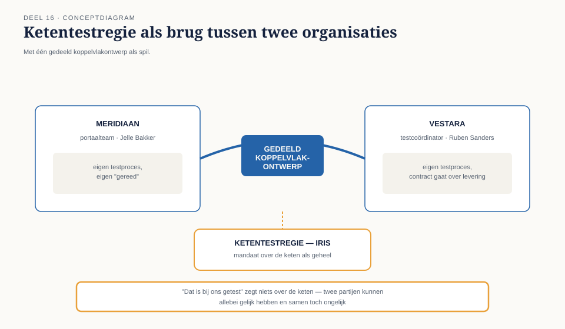
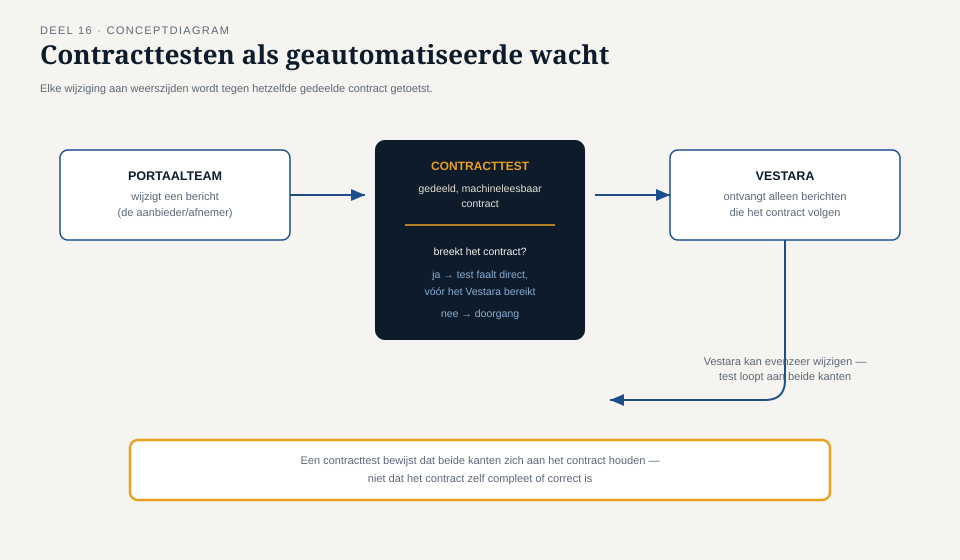

Deel 16 — Keten- en integratietesten
Reader · Ductus-cursus Testen en Kwaliteitsborging · niveau 2 (professional) · deel 16 van 30
Leerdoelen
Na dit deel kun je:
- een ketentestregie opzetten voor een programma met meerdere teams en externe partijen;
- contracttesten toepassen als middel om koppelvlakaannames expliciet en toetsbaar te maken;
- testen over organisatiegrenzen heen organiseren, inclusief het omgaan met verschillende testculturen en -tempo's;
- eigenaarschap van een ketenbevinding beleggen zonder dat teams naar elkaar wijzen;
- de relatie tussen ketentesten en de teststrategiematrix (deel 12) en het omgevingenlandschap (deel 15) toepassen.
Studielast: één dagdeel klassikaal, circa drie uur zelfstudie.
1. "Dat is bij ons getest"
Ruben Sanders, testcoördinator bij Vestara, en Jelle Bakker, nu teamlead van het portaalteam, zaten drie weken voor de eerste ketentest van het Mutatieplatform in hetzelfde overleg. Beiden verzekerden Frank Duiker: "dat is bij ons getest." Beiden hadden gelijk — en beiden hadden het over iets anders. Vestara had getest tegen een berichtspecificatie van zes maanden oud; het portaalteam tegen een recentere versie, met twee velden die Vestara's specificatie niet kende.
Dit is T7 uit niveau 1, letterlijk herhaald, ondanks alle lessen die er inmiddels over waren getrokken — omdat de oplossing voor T7 nooit een blijvende structuur had gekregen, alleen een eenmalige les.
Kernzin — "Dat is bij ons getest" is een zin die niets zegt over de keten. Twee partijen kunnen allebei gelijk hebben en toch, samen, ongelijk.
2. Ketentestregie
2.1 Waarom een keten een eigen regie nodig heeft
Een keten is niemands eigendom in de gewone organisatiestructuur — dat is precies waarom zij tussen wal en schip valt. Ketentestregie wijst expliciet een verantwoordelijke aan voor de keten als geheel, met het mandaat om beide (of meerdere) kanten samen te brengen, los van wie waar in de organisatie zit.
2.2 De regiefunctie in de praktijk
- Eén, gedeeld en actueel koppelvlakontwerp, met een vastgesteld eigenaarschap voor wijzigingen (niet "beide partijen documenteren het zelf", zoals bij Ruben en Jelle gebeurde).
- Een vaste cadans van ketentestsessies, niet alleen ad hoc vóór een release.
- Een escalatiepad specifiek voor ketenbevindingen, met duidelijkheid over wie ze oppakt.

3. Contracttesten
3.1 Het idee
Contracttesten maakt de aannames achter een koppelvlak expliciet en automatisch toetsbaar: beide kanten van de koppeling — de aanbieder (Vestara) en de afnemer (het portaalteam) — committeren zich aan een gedeeld, machineleesbaar "contract" dat vastlegt welke berichten, velden en gedragingen worden gegarandeerd.
3.2 Hoe het T7 structureel voorkomt
Waar een documentbeschrijving (zoals het functioneel ontwerp uit niveau 1) kan verouderen zonder dat iemand het merkt (T3), wordt een contracttest bij elke wijziging aan weerszijden automatisch uitgevoerd: verandert het portaalteam een bericht op een manier die het contract breekt, dan faalt de test onmiddellijk — vóór de wijziging Vestara's kant ooit bereikt.

Kernzin — Contracttesten verplaatst de vraag "hebben beide kanten dezelfde aanname?" van een handmatig, foutgevoelig overleg naar een geautomatiseerde, doorlopende controle.
3.3 Grenzen van contracttesten
Een contracttest bewijst dat beide kanten zich aan het contract houden. Het bewijst niet dat het contract zelf compleet of correct is — dat vereist nog steeds periodieke, inhoudelijke ketentestsessies (§2), net zoals een stub (niveau 1, deel 8 en deel 15) nooit de echte partner volledig vervangt.
4. Testen over organisatiegrenzen heen
4.1 Verschillende testculturen
Vestara werkt met een eigen testproces, een eigen definitie van "gereed", en een contract met Meridiaan dat niet over testen gaat maar over levering. Dit soort verschil is normaal, niet een teken van onwil — en de remedie is niet het ene proces aan het andere opleggen, maar een gedeeld minimum afspreken op het niveau van de keten (§2.2), zonder elke partij te dwingen de interne werkwijze van de ander over te nemen.
4.2 Eigenaarschap van een ketenbevinding
Wanneer een ketenbevinding ontstaat, is de eerste reflex vaak: welke kant veroorzaakte dit? Die vraag is minder belangrijk dan: wie lost dit nu op, en wie zorgt dat het niet opnieuw gebeurt? Ketentestregie (§2) hoort dit expliciet te beleggen — een bevinding op de grens tussen twee organisaties zonder aangewezen eigenaar verdwijnt tussen wal en schip, precies zoals de kennis van Astrid Poelman over de nachtelijke batch (niveau 1, T5) jarenlang binnenskamers bleef.
5. Relatie met de teststrategiematrix en het omgevingenlandschap
Ketentesten van de doorzending naar de kernadministratie staat in de teststrategiematrix (deel 12) als "intensief" op zowel functionele geschiktheid als compatibiliteit. Dat vertaalt zich naar de ketentestomgeving (deel 15) als een vaste, hoogfrequente activiteit — niet als eenmalige toets vlak vóór een release, zoals bij WGP 2.0 gebeurde.
6. TMAP-lens
Hoe heet dit daar. TMAP behandelt keten- en integratietesten expliciet als eigen bouwsteen, met contracttesten als een van de aanbevolen technieken binnen kwaliteitsengineering (deel 11).
Waar het werkelijk anders is. TMAP benadrukt dat de gedeelde afspraak tussen organisaties niet alleen technisch (het contract) maar ook relationeel is: regelmatig, informeel contact tussen de testers van beide kanten — niet alleen via formele overlegmomenten — voorkomt vaak meer dan het contract zelf. Iris organiseert daarom, naast de formele ketentestsessies, een tweewekelijks informeel overleg tussen haarzelf en Ruben Sanders.
Kernbegrippen
ketentestregie · gedeeld koppelvlakontwerp · contracttesten · testculturen over organisatiegrenzen · eigenaarschap van een ketenbevinding
Samenvatting in vijf zinnen
- "Dat is bij ons getest" zegt niets over de keten — twee partijen kunnen allebei gelijk hebben en samen toch ongelijk.
- Ketentestregie wijst expliciet een verantwoordelijke aan voor de keten als geheel, omdat een keten in de gewone organisatiestructuur niemands eigendom is.
- Contracttesten verplaatst de vraag naar gedeelde aannames van een handmatig overleg naar een geautomatiseerde, doorlopende controle — maar bewijst niet dat het contract zelf compleet is.
- Verschillende testculturen tussen organisaties zijn normaal; de remedie is een gedeeld minimum op ketenniveau, niet het ene proces aan het andere opleggen.
- Een ketenbevinding zonder aangewezen eigenaar verdwijnt tussen wal en schip — precies het patroon achter T5 en T7 uit niveau 1.